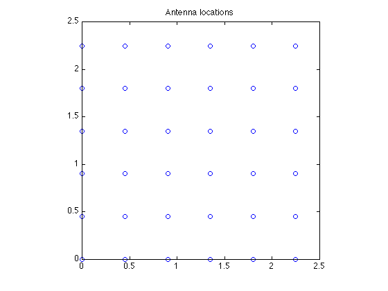
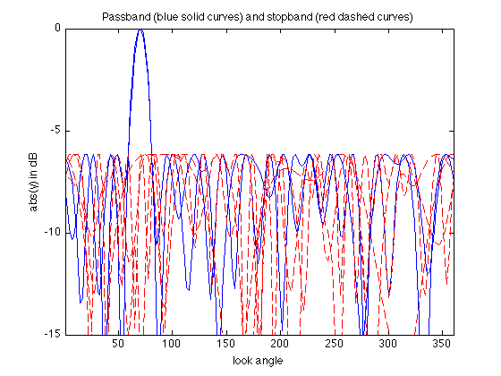
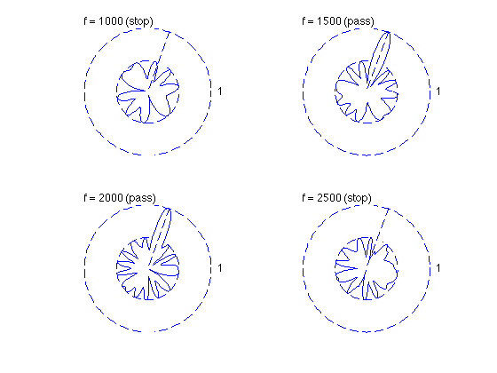

% "Antenna array pattern synthesis via convex optimization" % by H. Lebret and S. Boyd % (figures are generated) % % Designs a broadband antenna array with the far-field wave model such that: % - it minimizes sidelobe level outside the beamwidth of the pattern % - it has a unit sensitivity at some target direction and for some frequencies % % This is a convex problem (after sampling it can be formulated as an SOCP). % % minimize max |y(theta,f)| for theta,f outside the desired region % s.t. y(theta_tar,f_tar) = 1 % % where y is the antenna array gain pattern (complex function) and % variables are w (antenna array weights or shading coefficients). % Gain pattern is a linear function of w: y(theta,f) = w'*a(theta,f) % for some a(theta,f) describing antenna array configuration and specs. % % Written for CVX by Almir Mutapcic 02/02/06 % select array geometry ARRAY_GEOMETRY = '2D_UNIFORM_LATTICE'; % ARRAY_GEOMETRY = '2D_RANDOM'; %******************************************************************** % problem specs %******************************************************************** P = 2; % number of filter taps at each antenna element fs = 8000; % sampling rate = 8000 Hz T = 1/fs; % sampling spacing c = 2000; % wave speed theta_tar = 70; % target direction half_beamwidth = 10; % half beamwidth around the target direction f_low = 1500; % low frequency bound for the desired band f_high = 2000; % high frequency bound for the desired band %******************************************************************** % random array of n antenna elements %******************************************************************** if strcmp( ARRAY_GEOMETRY, '2D_RANDOM' ) % set random seed to repeat experiments rand('state',0); % uniformly distributed on [0,L]-by-[0,L] square n = 20; L = 0.45*(c/f_high)*sqrt(n); % loc is a column vector of x and y coordinates loc = L*rand(n,2); %******************************************************************** % uniform 2D array with m-by-m element with d spacing %******************************************************************** elseif strcmp( ARRAY_GEOMETRY, '2D_UNIFORM_LATTICE' ) m = 6; n = m^2; d = 0.45*(c/f_high); loc = zeros(n,2); for x = 0:m-1 for y = 0:m-1 loc(m*y+x+1,:) = [x y]; end end loc = loc*d; else error('Undefined array geometry') end %******************************************************************** % construct optimization data %******************************************************************** % discretized grid sampling parameters numtheta = 180; numfreqs = 6; theta = linspace(1,360,numtheta)'; freqs = linspace(500,3000,numfreqs)'; clear Atotal; for k = 1:numfreqs % FIR portion of the main matrix Afir = kron( ones(numtheta,n), -[0:P-1]/fs ); % cos/sine part of the main matrix Alocx = kron( loc(:,1)', ones(1,P) ); Alocy = kron( loc(:,2)', ones(1,P) ); Aloc = kron( cos(pi*theta/180)/c, Alocx ) + kron( sin(pi*theta/180)/c, Alocy ); % create the main matrix for each frequency sample Atotal(:,:,k) = exp(2*pi*i*freqs(k)*(Afir+Aloc)); end % single out indices so we can make equalities and inequalities inbandInd = find( freqs >= f_low & freqs <= f_high ); outbandInd = find( freqs < f_low | freqs > f_high ); thetaStopInd = find( theta > (theta_tar+half_beamwidth) | ... theta < (theta_tar-half_beamwidth) ); [diffClosest, thetaTarInd] = min( abs(theta - theta_tar) ); % create target and stopband constraint matrices Atar = []; As = []; % inband frequencies constraints for k = [inbandInd]' Atar = [Atar; Atotal(thetaTarInd,:,k)]; As = [As; Atotal(thetaStopInd,:,k)]; end % outband frequencies constraints for k = [outbandInd]' As = [As; Atotal(:,:,k)]; end %******************************************************************** % optimization problem %******************************************************************** cvx_begin variable w(n*P) complex minimize( max( abs( As*w ) ) ) subject to % target direction equality constraint Atar*w == 1; cvx_end % check if problem was successfully solved disp(['Problem is ' cvx_status]) if ~strfind(cvx_status,'Solved') return end fprintf(1,'The minimum sidelobe level is %3.2f dB.\n\n',... 20*log10(cvx_optval) ); %******************************************************************** % plots %******************************************************************** figure(1); clf; plot(loc(:,1),loc(:,2),'o') title('Antenna locations') axis('square') % plots of array patterns (cross sections for different frequencies) figure(2); clf; clr = { 'r' 'r' 'b' 'b' 'r' 'r' }; linetype = {'--' '--' '-' '-' '--' '--'}; for k = 1:numfreqs plot(theta, 20*log10(abs(Atotal(:,:,k)*w)), [clr{k} linetype{k}]); hold on; end axis([1 360 -15 0]) title('Passband (blue solid curves) and stopband (red dashed curves)') xlabel('look angle'), ylabel('abs(y) in dB'); hold off; % cross section polar plots figure(3); clf; bw = 2*half_beamwidth; subplot(2,2,1); polar_plot_ant(abs( Atotal(:,:,2)*w ),theta_tar,bw,'f = 1000 (stop)'); subplot(2,2,2); polar_plot_ant(abs( Atotal(:,:,3)*w ),theta_tar,bw,'f = 1500 (pass)'); subplot(2,2,3); polar_plot_ant(abs( Atotal(:,:,4)*w ),theta_tar,bw,'f = 2000 (pass)'); subplot(2,2,4); polar_plot_ant(abs( Atotal(:,:,5)*w ),theta_tar,bw,'f = 2500 (stop)');
Calling Mosek 9.1.9: 4244 variables, 1205 equality constraints
For improved efficiency, Mosek is solving the dual problem.
------------------------------------------------------------
MOSEK Version 9.1.9 (Build date: 2019-11-21 11:32:15)
Copyright (c) MOSEK ApS, Denmark. WWW: mosek.com
Platform: MACOSX/64-X86
MOSEK warning 710: #2 (nearly) zero elements are specified in sparse col '' (1571) of matrix 'A'.
MOSEK warning 710: #2 (nearly) zero elements are specified in sparse col '' (1572) of matrix 'A'.
MOSEK warning 710: #10 (nearly) zero elements are specified in sparse col '' (2081) of matrix 'A'.
MOSEK warning 710: #10 (nearly) zero elements are specified in sparse col '' (2082) of matrix 'A'.
MOSEK warning 710: #9 (nearly) zero elements are specified in sparse col '' (3701) of matrix 'A'.
MOSEK warning 710: #9 (nearly) zero elements are specified in sparse col '' (3702) of matrix 'A'.
MOSEK warning 710: #4 (nearly) zero elements are specified in sparse col '' (4241) of matrix 'A'.
MOSEK warning 710: #4 (nearly) zero elements are specified in sparse col '' (4242) of matrix 'A'.
Problem
Name :
Objective sense : min
Type : CONIC (conic optimization problem)
Constraints : 1205
Cones : 1060
Scalar variables : 4244
Matrix variables : 0
Integer variables : 0
Optimizer started.
Presolve started.
Linear dependency checker started.
Linear dependency checker terminated.
Eliminator started.
Freed constraints in eliminator : 0
Eliminator terminated.
Eliminator - tries : 1 time : 0.00
Lin. dep. - tries : 1 time : 0.03
Lin. dep. - number : 0
Presolve terminated. Time: 0.05
Problem
Name :
Objective sense : min
Type : CONIC (conic optimization problem)
Constraints : 1205
Cones : 1060
Scalar variables : 4244
Matrix variables : 0
Integer variables : 0
Optimizer - threads : 8
Optimizer - solved problem : the primal
Optimizer - Constraints : 145
Optimizer - Cones : 1061
Optimizer - Scalar variables : 3185 conic : 3185
Optimizer - Semi-definite variables: 0 scalarized : 0
Factor - setup time : 0.02 dense det. time : 0.00
Factor - ML order time : 0.00 GP order time : 0.00
Factor - nonzeros before factor : 1.06e+04 after factor : 1.06e+04
Factor - dense dim. : 0 flops : 6.71e+07
ITE PFEAS DFEAS GFEAS PRSTATUS POBJ DOBJ MU TIME
0 1.1e+03 1.0e+00 1.0e+00 0.00e+00 0.000000000e+00 0.000000000e+00 1.0e+00 0.09
1 1.1e+02 1.1e-01 1.4e-01 4.53e-01 -4.300381145e+00 -2.792693549e+00 1.1e-01 0.11
2 6.1e+00 5.7e-03 4.6e-04 2.06e+00 -9.307710492e-01 -9.298148204e-01 5.7e-03 0.12
3 1.9e+00 1.8e-03 1.1e-04 3.30e+00 -5.751664006e-01 -5.727301565e-01 1.8e-03 0.13
4 4.8e-01 4.5e-04 9.2e-06 1.28e+00 -5.104730390e-01 -5.102823850e-01 4.5e-04 0.15
5 7.7e-02 7.3e-05 3.2e-07 1.07e+00 -4.948668050e-01 -4.948832225e-01 7.3e-05 0.16
6 4.3e-02 4.1e-05 1.3e-07 1.01e+00 -4.934043426e-01 -4.934138125e-01 4.1e-05 0.17
7 7.4e-03 7.0e-06 8.8e-09 1.01e+00 -4.920453251e-01 -4.920471684e-01 7.0e-06 0.18
8 1.4e-03 1.4e-06 7.7e-10 1.00e+00 -4.919167595e-01 -4.919171196e-01 1.4e-06 0.19
9 2.7e-04 2.6e-07 6.3e-11 1.00e+00 -4.918830678e-01 -4.918831346e-01 2.6e-07 0.21
10 4.7e-05 4.5e-08 4.6e-12 1.00e+00 -4.918799293e-01 -4.918799406e-01 4.5e-08 0.22
11 7.0e-06 6.6e-09 2.7e-13 9.97e-01 -4.918793765e-01 -4.918793781e-01 6.6e-09 0.22
12 9.9e-07 9.4e-10 1.4e-14 1.00e+00 -4.918793150e-01 -4.918793152e-01 9.5e-10 0.23
13 1.4e-08 2.9e-11 2.6e-17 1.00e+00 -4.918793054e-01 -4.918793054e-01 1.4e-11 0.25
Optimizer terminated. Time: 0.25
Interior-point solution summary
Problem status : PRIMAL_AND_DUAL_FEASIBLE
Solution status : OPTIMAL
Primal. obj: -4.9187930536e-01 nrm: 1e+00 Viol. con: 7e-09 var: 0e+00 cones: 0e+00
Dual. obj: -4.9187930536e-01 nrm: 2e+00 Viol. con: 0e+00 var: 6e-12 cones: 0e+00
Optimizer summary
Optimizer - time: 0.25
Interior-point - iterations : 13 time: 0.25
Basis identification - time: 0.00
Primal - iterations : 0 time: 0.00
Dual - iterations : 0 time: 0.00
Clean primal - iterations : 0 time: 0.00
Clean dual - iterations : 0 time: 0.00
Simplex - time: 0.00
Primal simplex - iterations : 0 time: 0.00
Dual simplex - iterations : 0 time: 0.00
Mixed integer - relaxations: 0 time: 0.00
------------------------------------------------------------
Status: Solved
Optimal value (cvx_optval): +0.491879
Problem is Solved
The minimum sidelobe level is -6.16 dB.
  